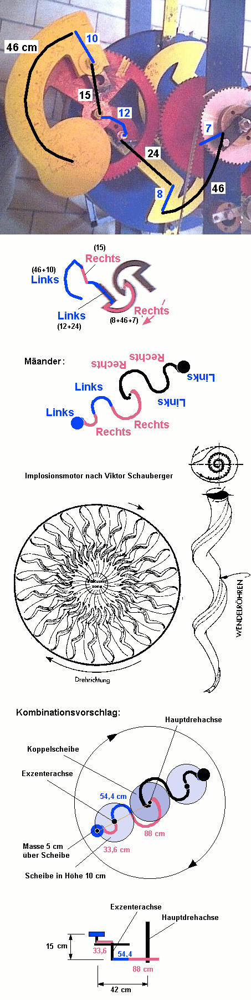
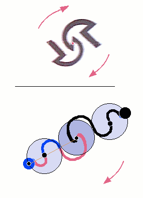
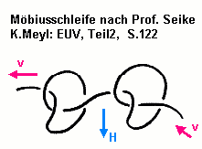
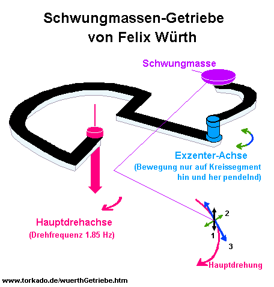
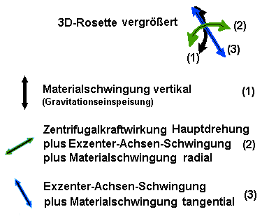
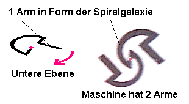

Würth-TechnikErfindungen von Felix WürthTeil 1 Teil 2 Und genau das hat V.Schauberger immer beschrieben, wenn er Wasser durch seine Wendelröhren oder Schwemmkanäle schickte, denen er einen Längswirbel (räumliche Lemniskate) durch die Mäanderform der Wasserführung verpaßte. Das Wasser wird dann dichter, schneller und gleichzeitig kälter, weil laminarer. Das dichte Wasser hat Sauerstoff abgegeben und Kohlenstoff aufgenommen, wird aber sofort aufsteigen, wenn es Platz zum Entspannen hat und Sauerstoff einbauen kann. Die Forelle schafft sich dadurch einen Wasser-Thermikschlauch, wie einen Raketenantrieb, indem sie aus den Kiemen (um ihren Körper herum) kontinuierlich Sauerstoff ins kalte schwere Wasser (+4°C) hinter sich abgibt. Ist das Wasser schon warm, geht das nicht mehr. Das chemische Verhalten mit der Aufnahme von Kohlenstoff oder Sauerstoff in Wasser wird im Stahl durch die Federkräfte ersetzt. Der Aufbau des Würth-Getriebes hat sogar Ähnlichkeit mit Schaubergers Implosionsmotor, wenn man genau hinsieht. Nur hat Felix jetzt den Riesenvorteil, daß er die Dissonanzlänge von Eisen kennt. Viktor S. konnte davon (in Bezug auf Wasser) vermutlich nichts wissen :  Ich fasse nochmal zusammen: Es ist ein schwingendes Feder-Masse-System, das in einer Richtung der Gravitation als antreibender Kraft unterworfen ist (Federkonstante(dz)), und in der Waagerechten in Richtung nach außen der Rotations-Fliehkraft (Federkonstante(dR)). Diese beiden Anteile schwingen aufgrund der resonanten Anordnung so, daß sie gleichzeitig das Material belasten und dann wieder gleichzeitig entlasten. Die Folge (Bernoulli!) ist invers dazu eine longitudinale Schwingung in Bahngeschwindigkeitsrichtung, wobei auch hier das Material als Masse-Feder-System jeweils dagegenarbeitet und eine passende Federkonstante(ds) braucht. Soweit sogut. Eine irgendwie in 3D-schwingende Feder, die man um eine Drehachse rotieren läßt, macht noch lange nicht gezwungenermaßen Overunity. Warum klappt es hier ? Alle drei Einzelschwingungen ergeben zusammen eine kleine asymmetrische Raumkurve von Torkadoform, und diese wird im Laufe eines Kreises mehrfach wiederholt. Das Aufsteigen gegen die Schwerkraft und das Heranziehen gegen die Fliehkraft erfolgt durch die elastischen Rückstellkräfte des gequälten Materials zur gleichen Zeit, und zwar schneller als die vorherige umgekehrte Bewegung. Es gibt während dieser kurzen Rückschwingbewegung einen kurzen starken Kraftstoß vorwärts, der bis zur Drehachse vordringt und sie in Drehrichtung beschleunigt. Dafür sorgt die Form der 'Spiralgalaxie'. In der zweiten, längeren Schwingphase ist der bremsende Kraftstoß pro Zeiteinheit schwächer, denn die gleiche Energie ist länger unterwegs in Richtung Drehachse. In den Winkeln der Spiralgalaxie wird seine Energie als Wärme und Widerstand verbraucht.  Die Spiralgalaxie wirkt wie eine Diode. Man sehe sich das Bild an. Der kurze Vorwärtsschub reißt sofort an der Drehachse beschleunigend, aber der langsame Rückwärtsschub knickt nur die äußeren Armbiegungen zusammen, und fast nichts kommt an der Drehachse an. Ein nicht zu vernachlässigender Trick an dem Ganzen ist aber, die kleine Torkadoschwingung so aufzubauen wie beschrieben. Dazu ist es nötig, daß die Gesamt-Armlänge genau L*phi (für das schwingende Material) groß ist. Falls die Armlänge auf L allein eingestellt ist oder in der Nähe von L, dann schwingt das System entweder rückwärts in der kurzen Phase, was die Bremswirkung erhöht, oder es schwingt nur in dR und dz, das wären einfache steile Spiralen auf einem Torus, wie der Draht auf einer Ringspule. Dort hat man auch nie Overunity, wohl aber in Spulen, die in Schleifen gewickelt sind und die naturrichtige Ausrichtung haben:  Ist das nicht eine schöne Parallele ? Felix Würth hat die Seike-Schleifen mit der Bewegung von Schwungmassen nachgebildet. Könnte
man nicht irgendwie versuchen, die Bewegung der Schwungmasse genau aufzuzeichnen,
um zu sehen, ob das tatsächlich solch eine Schleifenbewegung ist ? Vielleicht
mit einem kleinen Leuchtpunkt im Dunkeln ? Oder mit Dehnungsmeßstreifen
? Die Leuchtspur müßte ähnlich sein, wie die Skizze zeigt, wenn man
von außen filmt und die Bewegung von rechts nach links geht (Drehrichtung
von oben im Uhrzeigersinn, wie schon erklärt). Die drehende Vorwärtsbewegung
um die Hauptdrehachse ist natürlich zu jedem Zeitpunkt vorhanden und
in der Skizze nicht berücksichtigt. Ideale Energie-Übergabe bei Faktor Drei Es
könnte sehr gut sein, daß es auf das Anhalten ankommt. Auch Blitze (Hasenpusch:"Hochspannungstechnik",
S.189) gehen stufenweise ruckartig runter oder rauf. Die Pausen dauern
von 15 bis zu 100 Mikrosekunden. Zurück zum Würth-Getriebe. Die Gravitation müßte es dann bei ihrer Maximalstärke schaffen, zeitweise das Hochschnappen anzuhalten, bis sie selber nachläßt, und dem elastischen Material wieder vorübergehend das Kommando gibt. Genau dafür braucht man die dreifache Schwingungszeit des Siliziums (Erdfeld) ! Der kleine Torkado beim Würth-Getriebe begegnet während eines Umlaufes dreimal der Si-Gravitations-Schwingung, denn außen wird sie ja auch gebraucht zur Energie-Einspeisung 6 Halbwellen der G-Schwingung im Verlauf einer Schwungmassen-Schleife: außen
(Abwärtsbewegung): runter+hoch(=Anhalten)+runter = 1 Überschuß
'runter' Summenschwingung
= A*sin(wt) - sin(3wt), mit 4 < A < 10, A ganz, ideal
A=7 Denkbar ist ein 2^N-Vielfaches von Drei, obwohl der Effekt dadurch nicht besser wird. Der nutzbare Rest ist immer konstant. Damit wird klar, daß jeglicher Faktor 3 bei Resonanzen mit genau diesem Mechanismus zu tun haben kann. Das bedeutet, daß eine Kohlenstoffresonanz (Z=6=2*3) ganz automatisch Energie aus einer Wasserstoff-Schwingung (Z=1) oder einer Sauerstoff-Schwingung (Z=2^3) ziehen kann. Das ist der wahre Grund für die ganze Kohlenwasserstoff- und Sauerstoff-Chemie in organischer Materie. Bei der (originalen) Seike-Schleife sind die Elektronen in den vorwärtsführenden Verbindungsstücken gerade in der Kernphase, also dem Mittelschlauch ihres eigenen 2^N-Torkado, und wenn sie den großen Bogen der Schleife durchziehen, bilden sie die Atomhülle. In einer solchen Schleife sind sie auf dieser Größenebene "frei", sie haben keine Bewegungsbeschränkungen (=elektrischer Widerstand) und müßten Eigenschaften in Richtung Supraleitung zeigen, wenn die Schleifengröße genau 2^N zu ihrer Material-Resonanzlänge(Z=29 für Cu) paßt, oder vielleicht auch in G-Resonanzen (Si, SiO2).
Hier neue weitere Zeichnungen des Getriebe-Armes zur Verdeutlichung:  (hier die Skizze im Ganzen)   Die
Materialschwingung nach unten (1) wird durch die Gravitation erzeugt,
dann durch die Form des Armes und seiner federnden Rückstellkräfte mit
Hilfe der Hauptdrehung in radiale (2) und tangentiale (3) Schwingungen
umgeformt und nur die vorwärtsweisende (beschleunigende) tangentiale
Komponente bis zur Drehachse fortgeleitet. Die Drehung des Armes wird rhythmisch beschleunigt, wenn die tangentiale Schwungmassen-Schwingung in Drehrichtung zeigt. Diese Beschleunigung reicht aus, die Reibung zu kompensieren und die in die Drehung zu investierende Energie mindestens zu verdoppeln.
Teil 1 Teil 2
Weiteres zur Würth-Technik: www.naturtechnik.de Meine Email-Adresse: info@aladin24.de |
{kind=link}